ActD Trier ces notes
UMLActivity
Untitled
::
Note
::
Activity Diagram
::
ActD Trier ces notes
Description
none
Diagrams

ActD Trier ces notes
Groups
Utilisateur
Interface
BDD
Edges
(InitialNode1→Sélectionner un triage)
(Sélectionner un triage→Requête de sélection des notes en fonction du statut)
(Requête de sélection des notes en fonction du statut→Exécuter la requête)
(Exécuter la requête→Vérifier le retour BDD)
(Vérifier le retour BDD→DecisionNode1)
CATCH (DecisionNode1→Message SQL)
TRY (DecisionNode1→afficher les notes qui correspondent au triage)
(afficher les notes qui correspondent au triage→ActivityFinalNode1)
Properties
Name
Value
name
ActD Trier ces notes
stereotype
null
visibility
public
isReentrant
true
isReadOnly
false
isSingleExecution
false
Owned Elements
ActD Trier ces notes